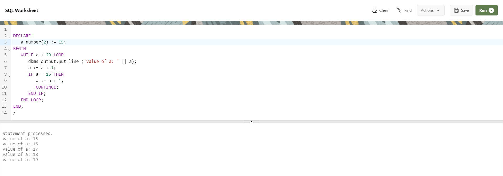

PL/SQL Continue Statement
The continue statement is used to exit the loop from the reminder if its body either conditionally or unconditionally and forces the next iteration of the loop to take place, skipping any codes in between.
Syntax
continue;
Example
DECLARE
a number(2) := 15;
BEGIN
WHILE a < 20 LOOP
dbms_output.put_line ('value of a: ' || a);
a := a + 1;
IF a = 15 THEN
a := a + 1;
CONTINUE;
END IF;
END LOOP;
END;
/
